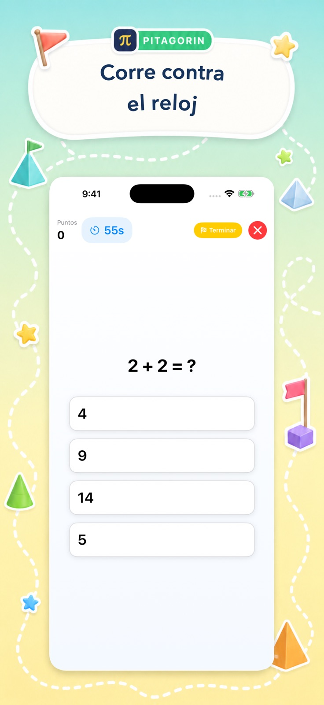
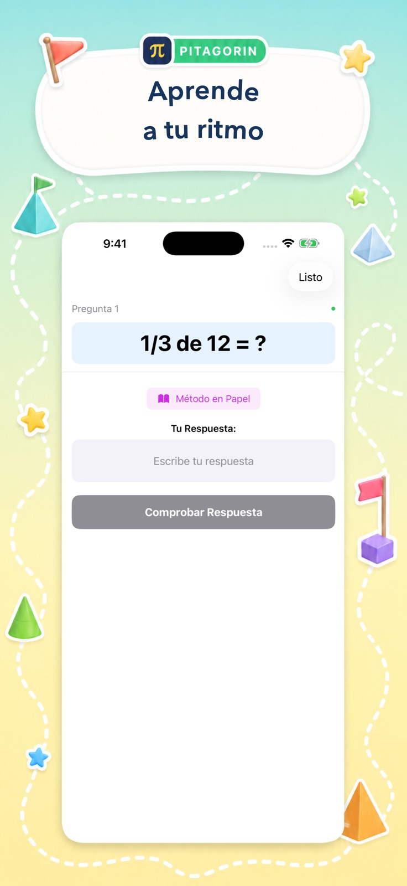
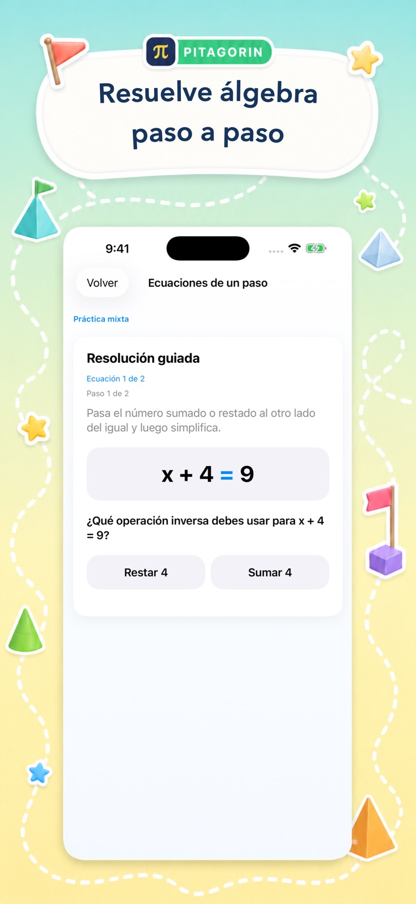

Juegos de aritmética
Practica sumas, restas, multiplicaciones, divisiones, fracciones, decimales, porcentajes, potencias, raíces y más en tres niveles.
Dentro de Pitagorin
Elige un juego rápido, una explicación tranquila, práctica de tablas, un examen propio, un reto de razonamiento o álgebra guiada.

Elige tu camino
Cada función responde a una necesidad distinta y permite elegir intensidad, tema y nivel de ayuda.
Practica sumas, restas, multiplicaciones, divisiones, fracciones, decimales, porcentajes, potencias, raíces y más en tres niveles.
Trabaja sin cronómetro, escribe la respuesta y abre pistas visuales específicas para cada operación.
Aprende las tablas del 1 al 12. Pitagorin Pro añade Repaso inteligente y Sprint de fluidez.
Crea un examen con operaciones y dificultad, guarda el resultado y revisa después los tutoriales.
Alcanza un número objetivo o equilibra ambos lados de una ecuación con pistas y deshacer.
Avanza por fundamentos, ecuaciones, proporciones, relaciones lineales, sistemas, exponentes y funciones.
El ciclo de aprendizaje
La respuesta rápida mantiene el ritmo y los tutoriales dejan espacio para comprender de verdad.


Cómo funciona una sesión
Pitagorin mantiene clara la siguiente acción para un niño independiente o un adulto que retoma las matemáticas.
Empieza a practicar
Pitagorin se descarga gratis en iPhone y iPad, con funciones Pro opcionales dentro de la app.